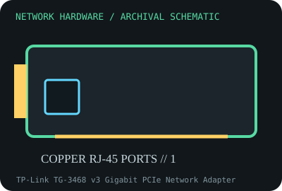

[ MODEL-SPECIFIC NETWORK HARDWARE RECORD ]
TP-Link TG-3468 v3 Gigabit PCIe Network Adapter
PCIe x1 10/100/1000BASE-T adapter with a single RJ-45 port. This record identifies the stated model/revision; visually similar products may use different silicon or firmware.

IDENTIFICATION: Verify the full label, board revision, vendor/device IDs and regulatory markings before selecting firmware or drivers. Nominal PHY/link rates below are not measured application throughput.
Specifications and compatibility
| Subcategory | Ethernet adapters |
|---|---|
| Exact model | TP-Link TG-3468 v3 Gigabit PCIe Network Adapter |
| Interface and connector | PCI Express x1 edge connector; one shielded 8P8C/RJ-45 port; full-height bracket supplied on many retail packages. |
| Controller / PHY / radio | Realtek RTL8111E-family Gigabit Ethernet controller is reported for V3 boards; verify the controller marking and PCB revision because TP-Link may substitute components between revisions. |
| Nominal throughput (not a test) | 10/100/1000 Mb/s negotiated Ethernet line rate (1 Gb/s maximum nominal); not a measured application rate. |
| Measured throughput | No throughput bench result is claimed by this archive. A real result requires a named peer, cable, OS, driver, MTU, test tool, and duration. |
| Driver / OS / firmware | TP-Link provides Windows drivers by hardware revision; Linux commonly supports this RTL8111-family device with the in-kernel r8169 driver. Driver behavior and wake/offload features depend on OS and silicon revision. |
| Compatibility | Requires a PCIe slot and an OS driver for the actual device ID. Gigabit operation requires a compatible switch/router and suitable four-pair Cat 5e-or-better cabling. |
| Variant warning | TG-3468 V3 is not interchangeable with V1/V2/V4 or similarly named TG-3468 cards: check the label, PCB version and chipset before selecting a driver. Some retail descriptions list different controller revisions. |
Variant and operating notes
TG-3468 V3 is not interchangeable with V1/V2/V4 or similarly named TG-3468 cards: check the label, PCB version and chipset before selecting a driver. Some retail descriptions list different controller revisions.
TP-Link provides Windows drivers by hardware revision; Linux commonly supports this RTL8111-family device with the in-kernel r8169 driver. Driver behavior and wake/offload features depend on OS and silicon revision.
Throughput policy: vendor/standard rates are labeled nominal. This archive includes no measured benchmark for this specimen; do not interpret a link rate or aggregate port capacity as sustained payload performance.
Archival, ESD and preservation notes
Record the V3 label, controller marking, MAC label, bracket, and driver version. Before storage, disconnect cables, handle only by board edges, and package in a closed antistatic bag; avoid rubbing contacts or using household plastic.
Preserve the exact model/revision, serial/date code, firmware and driver versions, accessories, condition, source provenance, and source-document revision. Never retain access credentials or undocumented secrets in the public catalog.
Manufacturer and standards sources
- TP-Link TG-3468 support and downloadsManufacturer or standards reference; match the complete model/revision before applying specifications.
- TP-Link TG-3468 product specificationsManufacturer or standards reference; match the complete model/revision before applying specifications.
- IEEE 802.3 Ethernet standardsManufacturer or standards reference; match the complete model/revision before applying specifications.
Source coverage can be family-level; manufacturer documentation for the exact part number and hardware revision takes precedence. Standards describe protocol behavior, not a promise of real-world performance.